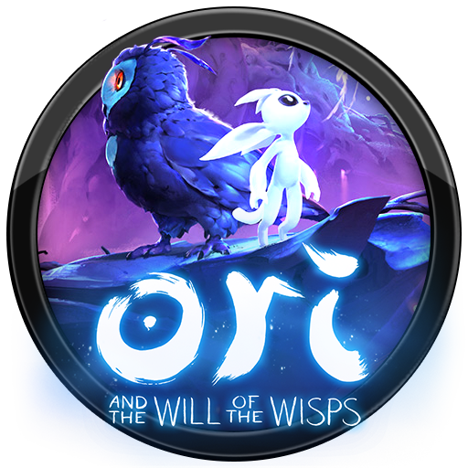

Rzadko zdarzają się tak dobre gry, jak obie części serii Ori. Jeszcze rzadziej należą do mało modnego gatunku gier
platformowych. Tymczasem Ori and the Will of the Wisps jest wszystkim, na co liczyli fani pierwszej części.
A także czymś o wiele więcej.
Ori and the Will of the Wisps
Głównym bohaterem gry jest Ori, młody i niedoświadczony duch lasu, który podczas swojej długiej podróży będzie starał się dowiedzieć czegoś więcej o sobie oraz otaczającym go świecie.
Ori and the Blind Forest
Młody duch wybiera się poza teren lasu Nibel, by odkryć swoje prawdziwe przeznaczenie. Choć w egzotycznym świecie czyhają na niego liczne niebezpieczeństwa, są tam też sojusznicy, którzy chętnie wyciągną do niego pomocną dłoń.
Aktualności
Aktualizacja Ori and the Will of the Wisps jest już dostępna!
Aktualizacja Ori and the Will of the Wisps jest już dostępna!

Aktualizacja Ori and the Will of the Wisps jest już dostępna!
O twórcach
Moon Studios to niezależne studio zajmujące się tworzeniem gier wideo, założone w 2010 roku przez Thomasa Mahlera (byłego artysty filmowego w Blizzard Entertainment) i Gennadiya Korola (byłego starszego inżyniera graficznego w Animation Lab). Firma skupia
się głównie na wysoce dopracowanej mechanice rozgrywki w swoich produktach i szczyci się nadmiernym procesem „iteracyjnego dopracowywania”. Moon Studios to rozproszony dom deweloperski: wszyscy członkowie zespołu są rozproszeni po
całym świecie, dzięki czemu Moon może współpracować z najlepszymi i najbardziej utalentowanymi ludźmi w branży gier. W 2011 roku Moon Studios zostało deweloperem Microsoft First Party i obecnie pracuje nad Ori and the Will of the Wisps
.
Odbiór gry
Jak się okazało, ta niezależna platformówka małego studia deweloperskiego miała w sobie więcej emocji,
piękna, magii i treści niż niejedna gra AAA od dużego studia. W Ori wszystko było powyżej oczekiwań. Przepiękna grafika,
niesamowita nagrana przez żywą orkiestrę muzyka,
wspaniała fabuła a przy okazji to była też od strony gameplayu bardzo dobra, ciekawa, wymagająca i mało wtórna gra.
Gra nie marnuje czasu i szybko po zaprezentowaniu nam najprostszego do pokonania przeciwnika wprowadza
tych dużo silniejszych i zwinniejszych. Muszę podkreślić, że Ori to nie jest prosta gra i
raczej nie nadaje się dla niedzielnego gracza. Bardzo szybko zmusi nas do ćwiczenia refleksu a przede
wszystkim do kombinowania i planowania z wyprzedzeniem. Od czasu do czasu pojawiają się tak zwani bossowie,
czyli bardzo mocni przeciwnicy. Z nimi walka potrafi potrwać i kilkadziesiąt minut
– z czego kilka minut na właściwą walkę i resztę czasu na ponowne próby i szukanie metody na bossa.